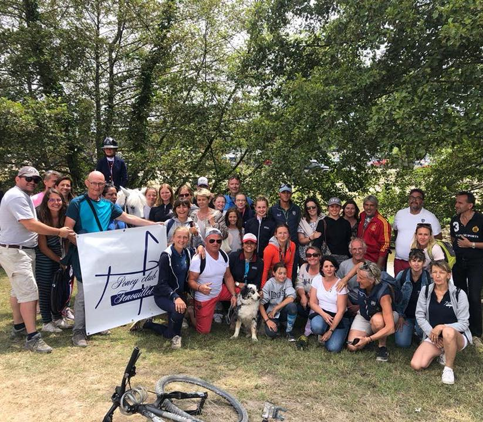
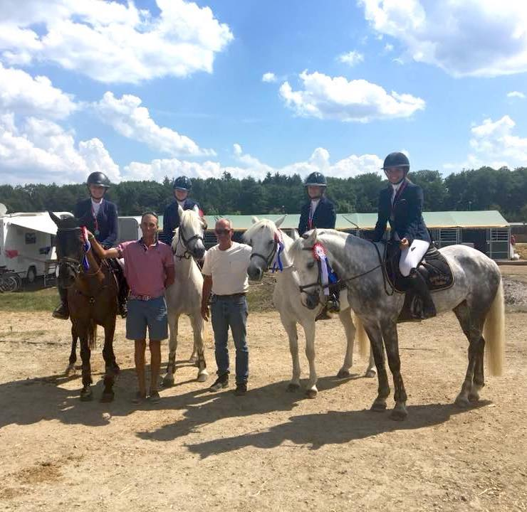

Le Centre Equestre de Fenouillet s'est classé sur la plus haute marche du podium du classement des clubs d'Occitanie au concours de saut d'obstacles. Sur le plan national, le club se positionne à la 39e place sur près de 2 000 clubs participants. Pour obtenir cet excellent résultat qui fait la joie des entraîneurs, il a fallu se placer sur trois podiums dont l'exploit d'Alice Bertoux, sur Chopta, qui a rapporté la médaille d'or du concours de saut d'obstacles (CSO) Poney 3 espoir.
Camille Frezefond a remporté la 2e place du CSO Poney Elite Cadet et l'équipe «4 nuances de stars» s'est placée également 2e au CSO par équipe, composée de Raphaëlle Cario sur Quinoa de Rullet, de Camille Frezefond sur Lookout Tara Rebel, d'Elsa Leguennan sur Crack de Belcombe et de Carole Sousa sur Quactus en flèche. Au total, les cavaliers de Fenouillet se seront placés à huit reprises dans le premier quart des clubs participants au CSO, sur 16 participations.
Le poney club de Fenouillet est revenu du Championnat de France avec une médaille de bronze en saut d'obstacle Poney 3 Excellence par équipe, dans la catégorie benjamin. Depuis près de 35 ans, la Fédération française d'équitation organise à Lamotte-Beuvron, en Sologne, les championnats de France d'équitation. Cette année, les championnats de France poneys ont eu lieu du 4 au 12 juillet. Avec ses 16 000 cavaliers, la participation de plus de 2 200 poneys clubs et centres équestres, le Generali Open de France a été certifié «plus grande manifestation équestre au monde» par le Guiness World Records en 2012. Cette année, le Poney club a présenté 5 poneys et autant de cavaliers, âgés de 10 à 16 ans. Il s'est classé 3e en saut d'obstacle avec Carole Sousa sur Neige, Romane Martinage sur Plume, Raphaëlle Cario sur Cactus et Manon Delclaux sur Rosalie.
Romane, 13 ans en est encore toute retournée : «C'était très difficile, il y avait beaucoup de cavaliers. Lorsque nous avons été retenus parmi les dix premières pour la finale, nous avions énormément de stress. Alors que j'avais fait deux passages sans faute dans les éliminatoires, j'ai fait un refus, qui nous a coûté quatre points en finale. Troisième c'est déjà super et nous comptons nous battre pour conquérir le titre l'an prochain». Léa Delsault a par ailleurs fini sixième en individuel sur Mirna. Des résultats encourageants pour leur coach Maxime Coutens, l'un des cinq professeurs du club. Le centre d'équitation a 20 ans Ce résultat est un beau cadeau d'anniversaire pour Catherine et Pierre Levenez qui ont créé le poney club il y a tout juste 20 ans. 450 cavaliers de 4 à 70 ans s'entraînent toute l'année dans cette école d'équitation qui a obtenu le label qualité.


19 route de Gagnac - 31150 Fenouillet
2018 - CE DE FENOUILLET - Conception: Dendea Production